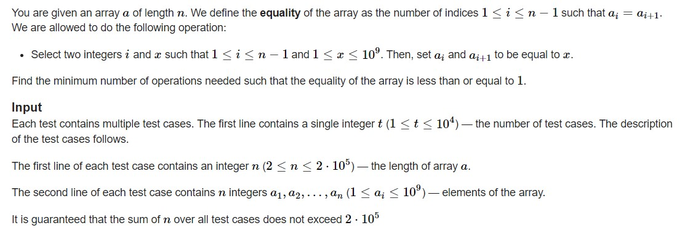

<!DOCTYPE html>


<html lang="zh-CN">
  

    <head>
      <meta charset="utf-8" />
        
      <meta
        name="viewport"
        content="width=device-width, initial-scale=1, maximum-scale=1"
      />
      <title>22.10.27刷题记录 |  jan&#39;s Blog</title>
  <meta name="generator" content="hexo-theme-ayer">
      
      <link rel="shortcut icon" href="/favicon.ico" />
       
<link rel="stylesheet" href="/dist/main.css">

      
<link rel="stylesheet" href="/css/fonts/remixicon.css">

      
<link rel="stylesheet" href="/css/custom.css">
 
      <script src="https://cdn.staticfile.org/pace/1.2.4/pace.min.js"></script>
       
 

      <link
        rel="stylesheet"
        href="https://cdn.jsdelivr.net/npm/@sweetalert2/theme-bulma@5.0.1/bulma.min.css"
      />
      <script src="https://cdn.jsdelivr.net/npm/sweetalert2@11.0.19/dist/sweetalert2.min.js"></script>

      <!-- mermaid -->
      
      <style>
        .swal2-styled.swal2-confirm {
          font-size: 1.6rem;
        }
      </style>
    <link rel="alternate" href="/atom.xml" title="jan's Blog" type="application/atom+xml">
</head>
  </html>
</html>


<body>
  <div id="app">
    
      
    <main class="content on">
      <section class="outer">
  <article
  id="post-22-10-27刷题记录"
  class="article article-type-post"
  itemscope
  itemprop="blogPost"
  data-scroll-reveal
>
  <div class="article-inner">
    
    <header class="article-header">
       
<h1 class="article-title sea-center" style="border-left:0" itemprop="name">
  22.10.27刷题记录
</h1>
 

      
    </header>
     
    <div class="article-meta">
      <a href="/2022/10/27/22-10-27%E5%88%B7%E9%A2%98%E8%AE%B0%E5%BD%95/" class="article-date">
  <time datetime="2022-10-27T14:25:28.000Z" itemprop="datePublished">2022-10-27</time>
</a>   
<div class="word_count">
    <span class="post-time">
        <span class="post-meta-item-icon">
            <i class="ri-quill-pen-line"></i>
            <span class="post-meta-item-text"> 字数统计:</span>
            <span class="post-count">1.8k</span>
        </span>
    </span>

    <span class="post-time">
        &nbsp; | &nbsp;
        <span class="post-meta-item-icon">
            <i class="ri-book-open-line"></i>
            <span class="post-meta-item-text"> 阅读时长≈</span>
            <span class="post-count">9 分钟</span>
        </span>
    </span>
</div>
 
    </div>
      
    <div class="tocbot"></div>


  
    <div class="article-entry" itemprop="articleBody">
       
  <h1 id="AND-Sorting"><a href="#AND-Sorting" class="headerlink" title="AND Sorting"></a><a target="_blank" rel="noopener" href="https://codeforces.com/problemset/problem/1682/B">AND Sorting</a></h1><p>题目大意:<br>给定一段长度为$n$的<strong>排列</strong>$p$(<em>permutation, from 0 to n-1, each  number occurs exactly once</em>),给定两个规则：</p>
<ul>
<li>选定$i,j(1\leq i&lt;j\leq n)$满足$p_i\&amp;p_j=X$</li>
<li>交换$p_i,p_j$</li>
</ul>
<p>要求求出能将$p$变成非递减序列的最大$X$.<br>我们可以这样想，要是$p$中有两个数需要交换$a&lt;-&gt;b$,此时还有一个数$X$在位置$c$$(X永远都会存在于p中)$，则我们有如下策略去进行交换：</p>
<ul>
<li>$p_i\&amp;p_j=X_1,p_i与p_j直接交换$</li>
<li>$寻找一个数X满足p_i\&amp;X=X,p_j\&amp;X=X,先交换p_i与X，再交换X与p_j$</li>
</ul>
<p>我们可以很容易证明两种策略得到的$X$均相同,否则$X_1=(1&lt;&lt;(k+1))-1$$(k为X的位数)$。</p>
<script type="math/tex; mode=display">p_i\&X\&p_j=X=X_1\&X</script><p>所以我们只需要把$(1&lt;&lt;(k+1))-1$与所有需要交换的数<em>AND</em>起来即可。<br>代码：<br><figure class="highlight cpp"><table><tr><td class="gutter"><pre><span class="line">1</span><br><span class="line">2</span><br><span class="line">3</span><br><span class="line">4</span><br><span class="line">5</span><br><span class="line">6</span><br><span class="line">7</span><br><span class="line">8</span><br><span class="line">9</span><br><span class="line">10</span><br><span class="line">11</span><br><span class="line">12</span><br><span class="line">13</span><br><span class="line">14</span><br><span class="line">15</span><br><span class="line">16</span><br><span class="line">17</span><br><span class="line">18</span><br><span class="line">19</span><br><span class="line">20</span><br><span class="line">21</span><br><span class="line">22</span><br><span class="line">23</span><br><span class="line">24</span><br><span class="line">25</span><br><span class="line">26</span><br><span class="line">27</span><br><span class="line">28</span><br><span class="line">29</span><br><span class="line">30</span><br><span class="line">31</span><br><span class="line">32</span><br><span class="line">33</span><br><span class="line">34</span><br></pre></td><td class="code"><pre><span class="line"><span class="meta">#<span class="keyword">include</span> <span class="string">&lt;bits/stdc++.h&gt;</span></span></span><br><span class="line"><span class="meta">#<span class="keyword">define</span> IOS ios_base::sync_with_stdio(0); cin.tie(0);</span></span><br><span class="line"><span class="meta">#<span class="keyword">define</span> INF 0x3f3f3f3f</span></span><br><span class="line"><span class="meta">#<span class="keyword">define</span> mod 1000000007</span></span><br><span class="line"><span class="meta">#<span class="keyword">define</span> PII pair<span class="string">&lt;int,int&gt;</span></span></span><br><span class="line"><span class="meta">#<span class="keyword">define</span> PLL pair<span class="string">&lt;ll,ll&gt;</span></span></span><br><span class="line"><span class="keyword">typedef</span> <span class="type">long</span> <span class="type">long</span> ll;</span><br><span class="line"><span class="keyword">using</span> <span class="keyword">namespace</span> std;</span><br><span class="line"><span class="type">int</span> t;</span><br><span class="line">string s;</span><br><span class="line"><span class="type">int</span> m;</span><br><span class="line"><span class="type">int</span> n;</span><br><span class="line">ll k;ll x;</span><br><span class="line"><span class="function"><span class="type">void</span> <span class="title">solve</span><span class="params">()</span></span>&#123;</span><br><span class="line">    cin&gt;&gt;n;</span><br><span class="line">    <span class="function">vector&lt;<span class="type">int</span>&gt; <span class="title">v</span><span class="params">(n+<span class="number">3</span>)</span></span>;</span><br><span class="line">    vector&lt;<span class="type">int</span>&gt; tm;<span class="type">int</span> maxx=<span class="number">0</span>;</span><br><span class="line">    <span class="type">int</span> ans=(<span class="number">1</span>&lt;&lt;<span class="number">30</span>)<span class="number">-1</span>;</span><br><span class="line">    <span class="keyword">for</span>(<span class="type">int</span> i=<span class="number">0</span>;i&lt;n;i++)&#123;</span><br><span class="line">        cin&gt;&gt;v[i];</span><br><span class="line">        <span class="keyword">if</span>(v[i]!=i)&#123;</span><br><span class="line">            ans&amp;=v[i];</span><br><span class="line">        &#125;</span><br><span class="line">    &#125;</span><br><span class="line"></span><br><span class="line">    <span class="comment">//if(maxx==INF)maxx=0;</span></span><br><span class="line">    cout&lt;&lt;ans&lt;&lt;<span class="string">&quot;\n&quot;</span>;</span><br><span class="line">&#125;</span><br><span class="line"><span class="function"><span class="type">int</span> <span class="title">main</span><span class="params">()</span></span>&#123;</span><br><span class="line">    IOS</span><br><span class="line">    cin&gt;&gt;t;</span><br><span class="line">    <span class="keyword">while</span>(t--)</span><br><span class="line">    <span class="built_in">solve</span>();</span><br><span class="line">&#125;</span><br></pre></td></tr></table></figure></p>
<h1 id="Circular-Local-MiniMax"><a href="#Circular-Local-MiniMax" class="headerlink" title="Circular Local MiniMax"></a><a target="_blank" rel="noopener" href="https://codeforces.com/problemset/problem/1685/A">Circular Local MiniMax</a></h1><p>题目大意:<br>给定一个数组$a$长度为$n(n\geq 3)$,将其重排列是否能形成一个数组$b$满足对于所有$i(1\leq i\leq n)$使得$b_i$满足以下之一:</p>
<ul>
<li>$ b_{i-1}&lt; b_i &gt;b_{i+1} $</li>
<li>$b_{i-1}&gt;b_i&lt;b_{i+1}$</li>
<li>当$i=1,b_{i-1}=b_n,i=n时,b_{i+1}=b_1$</li>
</ul>
<p>我们可以很容易证明$a$长度为奇数时是总是不存在的:</p>
<ul>
<li><p>假设前$(n-1)$的元素是满足要求的，<br>即$b_{n-2} &lt; b_{n-1} &gt; b_1$或者$b_{n-2} &gt; b_{n-1} &lt; b_1$,<br>先假设为前者，则当第$n$个元素添加在末尾时是否存在任意一个数$b_n$能满足要求<br>由于是$b_{n-1} &gt; b_{n-2}$,则$b_n$应当满足$b_{n-1} &gt; b_n&lt;b_1$,<br>但是又有$b_1 &lt;b_{n-1}$,此时也要满足$b_1 &lt; b_n$,条件矛盾，而后者的情况也应该是一样的</p>
</li>
<li><p>那我们讨论当前$(n-2)$是满足条件时的情况,添加一个元素至$n-1$时总是不可能的,<br>当一次添加两个元素时，还是假设前者$b_{n-3} &lt; b_{n-2} &gt; b_1$，我们可以添加两个元素，<br>满足$ \{b_{n-1} , b_{n}\} -&gt; (b_{n-2} &gt; b_{n-1} &lt; b_{n}),(b_{n-1} &lt; b_n &gt; b_1)$.</p>
</li>
</ul>
<p>而当$a$长度$n=3$时假设已知有元素$\{a_1,a_2\}(a_1&lt;a_2)$此时添加第三个元素$a_3$,<br>无论$a_3$等于多少都不能构造出$b$,由此递推当$n=4$时是可以存在的,<br>而$n=4+2k(k=1,2,…)$都会存在,$n=3+2k(k=1,2,…)$都不存在。</p>
<p>此时当$n$为偶数时$a$可能可以构造出$b$,先对$a$进行排序。<br>我们总是可以构造出$b=\{a_1,a_{\frac{n}{2}+1},a_2,a_{\frac{n}{2}+2},…\}$<br>只需要判断是否$a_1=a_{\frac{n}{2}+1}||a_2=a_{\frac{n}{2}+1}$</p>
<p>AC代码:<br><figure class="highlight cpp"><table><tr><td class="gutter"><pre><span class="line">1</span><br><span class="line">2</span><br><span class="line">3</span><br><span class="line">4</span><br><span class="line">5</span><br><span class="line">6</span><br><span class="line">7</span><br><span class="line">8</span><br><span class="line">9</span><br><span class="line">10</span><br><span class="line">11</span><br><span class="line">12</span><br><span class="line">13</span><br><span class="line">14</span><br><span class="line">15</span><br><span class="line">16</span><br><span class="line">17</span><br><span class="line">18</span><br><span class="line">19</span><br><span class="line">20</span><br><span class="line">21</span><br><span class="line">22</span><br><span class="line">23</span><br><span class="line">24</span><br><span class="line">25</span><br><span class="line">26</span><br><span class="line">27</span><br><span class="line">28</span><br><span class="line">29</span><br><span class="line">30</span><br><span class="line">31</span><br><span class="line">32</span><br><span class="line">33</span><br><span class="line">34</span><br><span class="line">35</span><br><span class="line">36</span><br><span class="line">37</span><br><span class="line">38</span><br><span class="line">39</span><br><span class="line">40</span><br><span class="line">41</span><br><span class="line">42</span><br><span class="line">43</span><br></pre></td><td class="code"><pre><span class="line"><span class="meta">#<span class="keyword">include</span> <span class="string">&lt;bits/stdc++.h&gt;</span></span></span><br><span class="line"><span class="meta">#<span class="keyword">define</span> IOS ios_base::sync_with_stdio(0); cin.tie(0);</span></span><br><span class="line"><span class="meta">#<span class="keyword">define</span> INF 0x3f3f3f3f</span></span><br><span class="line"><span class="meta">#<span class="keyword">define</span> mod 1000000007</span></span><br><span class="line"><span class="meta">#<span class="keyword">define</span> PII pair<span class="string">&lt;int,int&gt;</span></span></span><br><span class="line"><span class="meta">#<span class="keyword">define</span> PLL pair<span class="string">&lt;ll,ll&gt;</span></span></span><br><span class="line"><span class="keyword">typedef</span> <span class="type">long</span> <span class="type">long</span> ll;</span><br><span class="line"><span class="keyword">using</span> <span class="keyword">namespace</span> std;</span><br><span class="line"><span class="type">int</span> t;</span><br><span class="line">string s;</span><br><span class="line"><span class="type">int</span> m;</span><br><span class="line"><span class="type">int</span> n;</span><br><span class="line">ll k;ll x;</span><br><span class="line"><span class="function"><span class="type">void</span> <span class="title">solve</span><span class="params">()</span></span>&#123;</span><br><span class="line">    cin&gt;&gt;n;</span><br><span class="line">    vector&lt;<span class="type">int</span>&gt; v;</span><br><span class="line">    <span class="keyword">for</span>(<span class="type">int</span> i=<span class="number">0</span>;i&lt;n;i++)&#123;</span><br><span class="line">        <span class="type">int</span> x;</span><br><span class="line">        cin&gt;&gt;x;</span><br><span class="line">        v.<span class="built_in">push_back</span>(x);</span><br><span class="line">    &#125;</span><br><span class="line">    <span class="keyword">if</span>(n%<span class="number">2</span>)&#123;</span><br><span class="line">        cout&lt;&lt;<span class="string">&quot;NO\n&quot;</span>;</span><br><span class="line">        <span class="keyword">return</span>;</span><br><span class="line">    &#125;<span class="keyword">else</span>&#123;</span><br><span class="line">        <span class="built_in">sort</span>(v.<span class="built_in">begin</span>(),v.<span class="built_in">end</span>());</span><br><span class="line">        <span class="keyword">for</span>(<span class="type">int</span> i=<span class="number">0</span>;i&lt;n/<span class="number">2</span>;i++)&#123;</span><br><span class="line">            <span class="keyword">if</span>(v[i]==v[n/<span class="number">2</span>+i]||(v[i]==v[n/<span class="number">2</span>+i<span class="number">-1</span>]&amp;&amp;i&gt;=<span class="number">1</span>))&#123;</span><br><span class="line">                cout&lt;&lt;<span class="string">&quot;NO\n&quot;</span>;<span class="keyword">return</span>;</span><br><span class="line">            &#125;</span><br><span class="line">        &#125;</span><br><span class="line">        cout&lt;&lt;<span class="string">&quot;YES\n&quot;</span>;</span><br><span class="line">        <span class="keyword">for</span>(<span class="type">int</span> i=<span class="number">0</span>;i&lt;n/<span class="number">2</span>;i++)&#123;</span><br><span class="line">            cout&lt;&lt;v[i]&lt;&lt;<span class="string">&quot; &quot;</span>&lt;&lt;v[n/<span class="number">2</span>+i]&lt;&lt;<span class="string">&quot; &quot;</span>;</span><br><span class="line">        &#125;cout&lt;&lt;<span class="string">&quot;\n&quot;</span>;</span><br><span class="line">    &#125;</span><br><span class="line">&#125;</span><br><span class="line"><span class="function"><span class="type">int</span> <span class="title">main</span><span class="params">()</span></span>&#123;</span><br><span class="line">    IOS</span><br><span class="line">    cin&gt;&gt;t;</span><br><span class="line">    <span class="keyword">while</span>(t--)</span><br><span class="line">    <span class="built_in">solve</span>();</span><br><span class="line">&#125;</span><br></pre></td></tr></table></figure></p>
<h1 id="A-B-C-Sort"><a href="#A-B-C-Sort" class="headerlink" title="A-B-C Sort"></a><a target="_blank" rel="noopener" href="https://codeforces.com/problemset/problem/1674/D">A-B-C Sort</a></h1><p>题目大意:<br>有三个数组$A,B,C$其中$A$已经给出,$B,C$均为空，有如下规则:</p>
<ul>
<li>先将$A$元素从末尾开始插入$B$数组的中间,<br>当$B$长度为奇数可以选择插入到中间的左还是右</li>
<li>然后将$B$中的元素从中间开始插入$C$的末尾,<br>如果$B$的长度为偶数,可以选择将中间的左还是右插入$C$末尾</li>
</ul>
<p>按照以上规则判断是否能构造出$C$是非递减的。<br>观察规则，我们可以知道$\{a_n,a_{n-1}\}$是可以以任意的顺序放在$B$数组的中间，<br>然后以任意的顺序放在$C$的$\{c_{n-1},c_{n}\}$，因此，$A$可以分为多个$pair$，<br>$\{a_n,a_{n-1}\},\{a_{n-2},a_{n-3}\}$…每个$pair$内可以交换顺序，最后$A$是否能有序即为$C$是否能有序。<br>代码:<br><figure class="highlight cpp"><table><tr><td class="gutter"><pre><span class="line">1</span><br><span class="line">2</span><br><span class="line">3</span><br><span class="line">4</span><br><span class="line">5</span><br><span class="line">6</span><br><span class="line">7</span><br><span class="line">8</span><br><span class="line">9</span><br><span class="line">10</span><br><span class="line">11</span><br><span class="line">12</span><br><span class="line">13</span><br><span class="line">14</span><br><span class="line">15</span><br><span class="line">16</span><br><span class="line">17</span><br><span class="line">18</span><br><span class="line">19</span><br><span class="line">20</span><br><span class="line">21</span><br><span class="line">22</span><br><span class="line">23</span><br><span class="line">24</span><br><span class="line">25</span><br><span class="line">26</span><br><span class="line">27</span><br><span class="line">28</span><br><span class="line">29</span><br><span class="line">30</span><br><span class="line">31</span><br><span class="line">32</span><br><span class="line">33</span><br><span class="line">34</span><br><span class="line">35</span><br><span class="line">36</span><br><span class="line">37</span><br><span class="line">38</span><br><span class="line">39</span><br><span class="line">40</span><br><span class="line">41</span><br></pre></td><td class="code"><pre><span class="line"><span class="meta">#<span class="keyword">include</span> <span class="string">&lt;bits/stdc++.h&gt;</span></span></span><br><span class="line"><span class="meta">#<span class="keyword">define</span> IOS ios_base::sync_with_stdio(0); cin.tie(0);</span></span><br><span class="line"><span class="meta">#<span class="keyword">define</span> INF 0x3f3f3f3f</span></span><br><span class="line"><span class="meta">#<span class="keyword">define</span> mod 1000000007</span></span><br><span class="line"><span class="meta">#<span class="keyword">define</span> PII pair<span class="string">&lt;int,int&gt;</span></span></span><br><span class="line"><span class="meta">#<span class="keyword">define</span> PLL pair<span class="string">&lt;ll,ll&gt;</span></span></span><br><span class="line"><span class="keyword">typedef</span> <span class="type">long</span> <span class="type">long</span> ll;</span><br><span class="line"><span class="keyword">using</span> <span class="keyword">namespace</span> std;</span><br><span class="line"><span class="type">int</span> t;</span><br><span class="line">string s;</span><br><span class="line"><span class="type">int</span> m;</span><br><span class="line"><span class="type">int</span> n;</span><br><span class="line">ll k;ll x;</span><br><span class="line"><span class="function"><span class="type">void</span> <span class="title">solve</span><span class="params">()</span></span>&#123;</span><br><span class="line">    cin&gt;&gt;n;</span><br><span class="line">    vector&lt;<span class="type">int</span>&gt; v;</span><br><span class="line">    <span class="keyword">for</span>(<span class="type">int</span> i=<span class="number">1</span>;i&lt;=n;i++)&#123;</span><br><span class="line">        <span class="type">int</span> xx;</span><br><span class="line">        cin&gt;&gt;xx;</span><br><span class="line">        v.<span class="built_in">push_back</span>(xx);</span><br><span class="line">    &#125;</span><br><span class="line">    <span class="keyword">for</span>(<span class="type">int</span> i=v.<span class="built_in">size</span>()<span class="number">-1</span>;i&gt;<span class="number">0</span>;i-=<span class="number">2</span>)&#123;</span><br><span class="line">        <span class="keyword">if</span>(v[i]&lt;v[i<span class="number">-1</span>])&#123;</span><br><span class="line">            <span class="type">int</span> tmp=v[i];</span><br><span class="line">            v[i]=v[i<span class="number">-1</span>];</span><br><span class="line">            v[i<span class="number">-1</span>]=tmp;</span><br><span class="line">        &#125;</span><br><span class="line">    &#125;</span><br><span class="line">    <span class="keyword">if</span>(!<span class="built_in">is_sorted</span>(v.<span class="built_in">begin</span>(),v.<span class="built_in">end</span>()))&#123;</span><br><span class="line">        cout&lt;&lt;<span class="string">&quot;NO\n&quot;</span>;</span><br><span class="line">    &#125;<span class="keyword">else</span>&#123;</span><br><span class="line">        cout&lt;&lt;<span class="string">&quot;YES\n&quot;</span>;</span><br><span class="line">    &#125;</span><br><span class="line"></span><br><span class="line">&#125;</span><br><span class="line"><span class="function"><span class="type">int</span> <span class="title">main</span><span class="params">()</span></span>&#123;</span><br><span class="line">    IOS</span><br><span class="line">    cin&gt;&gt;t;</span><br><span class="line">    <span class="keyword">while</span>(t--)</span><br><span class="line">    <span class="built_in">solve</span>();</span><br><span class="line">&#125;</span><br></pre></td></tr></table></figure></p>
<h1 id="Unequal-Array"><a href="#Unequal-Array" class="headerlink" title="Unequal Array"></a><a target="_blank" rel="noopener" href="https://codeforces.com/problemset/problem/1672/C">Unequal Array</a></h1><p></p>
<p>对于这种关于$a_i=a_{i+1}$的题目我们可以关注一下构造一个长度为$n-1$的$b$数组，<br>当$a_i=a_{i+1}$时$b_i=1$，否则$b_i=0$。<br>则对于题目的目标，就是要将$b$数组中$1$的个数降为$1或0$.<br>然后观察规则与$b$数组的关系:</p>
<ul>
<li>当$b$只有$11$时，最小次数为0；</li>
<li>当$b$中有$101$时，要将其变成$11$，次数为1；</li>
<li>当$b$中有$1001$时，或者中间更多0，此时次数为$j-i-1$,<br>$j为最后一个1的下标，i为第一个1的下标$</li>
</ul>
<p>代码:<br><figure class="highlight cpp"><table><tr><td class="gutter"><pre><span class="line">1</span><br><span class="line">2</span><br><span class="line">3</span><br><span class="line">4</span><br><span class="line">5</span><br><span class="line">6</span><br><span class="line">7</span><br><span class="line">8</span><br><span class="line">9</span><br><span class="line">10</span><br><span class="line">11</span><br><span class="line">12</span><br><span class="line">13</span><br><span class="line">14</span><br><span class="line">15</span><br><span class="line">16</span><br><span class="line">17</span><br><span class="line">18</span><br><span class="line">19</span><br><span class="line">20</span><br><span class="line">21</span><br><span class="line">22</span><br><span class="line">23</span><br><span class="line">24</span><br><span class="line">25</span><br><span class="line">26</span><br><span class="line">27</span><br><span class="line">28</span><br><span class="line">29</span><br><span class="line">30</span><br><span class="line">31</span><br><span class="line">32</span><br><span class="line">33</span><br><span class="line">34</span><br><span class="line">35</span><br><span class="line">36</span><br><span class="line">37</span><br><span class="line">38</span><br><span class="line">39</span><br><span class="line">40</span><br><span class="line">41</span><br><span class="line">42</span><br><span class="line">43</span><br><span class="line">44</span><br><span class="line">45</span><br><span class="line">46</span><br><span class="line">47</span><br><span class="line">48</span><br><span class="line">49</span><br><span class="line">50</span><br><span class="line">51</span><br><span class="line">52</span><br><span class="line">53</span><br><span class="line">54</span><br><span class="line">55</span><br><span class="line">56</span><br></pre></td><td class="code"><pre><span class="line"><span class="meta">#<span class="keyword">include</span> <span class="string">&lt;bits/stdc++.h&gt;</span></span></span><br><span class="line"><span class="meta">#<span class="keyword">define</span> IOS ios_base::sync_with_stdio(0); cin.tie(0);</span></span><br><span class="line"><span class="meta">#<span class="keyword">define</span> INF 0x3f3f3f3f</span></span><br><span class="line"><span class="meta">#<span class="keyword">define</span> mod 1000000007</span></span><br><span class="line"><span class="meta">#<span class="keyword">define</span> PII pair<span class="string">&lt;int,int&gt;</span></span></span><br><span class="line"><span class="meta">#<span class="keyword">define</span> PLL pair<span class="string">&lt;ll,ll&gt;</span></span></span><br><span class="line"><span class="keyword">typedef</span> <span class="type">long</span> <span class="type">long</span> ll;</span><br><span class="line"><span class="keyword">using</span> <span class="keyword">namespace</span> std;</span><br><span class="line"><span class="type">int</span> t;</span><br><span class="line">string s;</span><br><span class="line"><span class="type">int</span> m;</span><br><span class="line"><span class="type">int</span> n;</span><br><span class="line">ll k;ll x;</span><br><span class="line"><span class="function"><span class="type">void</span> <span class="title">solve</span><span class="params">()</span></span>&#123;</span><br><span class="line">    cin&gt;&gt;n;</span><br><span class="line">    vector&lt;<span class="type">int</span> &gt; v;</span><br><span class="line">    <span class="function">vector&lt;<span class="type">int</span>&gt; <span class="title">d</span><span class="params">(n+<span class="number">3</span>)</span></span>;</span><br><span class="line">    <span class="keyword">for</span>(<span class="type">int</span> i=<span class="number">1</span>;i&lt;=n;i++)&#123;</span><br><span class="line">        cin&gt;&gt;d[i];</span><br><span class="line">    &#125;</span><br><span class="line">    v.<span class="built_in">push_back</span>(<span class="number">0</span>);</span><br><span class="line">    <span class="keyword">for</span>(<span class="type">int</span> i=<span class="number">1</span>;i&lt;n;i++)&#123;</span><br><span class="line">        <span class="keyword">if</span>(d[i]==d[i+<span class="number">1</span>])&#123;</span><br><span class="line">            v.<span class="built_in">push_back</span>(<span class="number">1</span>);</span><br><span class="line">        &#125; <span class="keyword">else</span> v.<span class="built_in">push_back</span>(<span class="number">0</span>);</span><br><span class="line">    &#125;<span class="type">int</span> fi=<span class="number">0</span>,la=<span class="number">0</span>;</span><br><span class="line">    <span class="keyword">for</span>(<span class="type">int</span> i=<span class="number">0</span>;i&lt;v.<span class="built_in">size</span>();i++)&#123;</span><br><span class="line">        <span class="keyword">if</span>(v[i]==<span class="number">1</span>)&#123;</span><br><span class="line">            fi=i;</span><br><span class="line">            <span class="keyword">break</span>;</span><br><span class="line">        &#125;</span><br><span class="line">    &#125;</span><br><span class="line">    <span class="keyword">for</span>(<span class="type">int</span> i=v.<span class="built_in">size</span>()<span class="number">-1</span>;i&gt;<span class="number">0</span>;i--)&#123;</span><br><span class="line">        <span class="keyword">if</span>(v[i]==<span class="number">1</span>)&#123;</span><br><span class="line">            la=i;</span><br><span class="line">            <span class="keyword">break</span>;</span><br><span class="line">        &#125;</span><br><span class="line">    &#125;</span><br><span class="line">    <span class="keyword">if</span>(la-fi==<span class="number">1</span>)&#123;</span><br><span class="line">        cout&lt;&lt;<span class="number">1</span>&lt;&lt;<span class="string">&quot;\n&quot;</span>;</span><br><span class="line">        <span class="keyword">return</span>;</span><br><span class="line">    &#125;<span class="keyword">else</span> <span class="keyword">if</span>(la-fi==<span class="number">2</span>)&#123;</span><br><span class="line">        cout&lt;&lt;<span class="number">1</span>&lt;&lt;<span class="string">&quot;\n&quot;</span>;</span><br><span class="line">        <span class="keyword">return</span>;</span><br><span class="line">    &#125; <span class="keyword">else</span> <span class="keyword">if</span>(la==fi)&#123;</span><br><span class="line">        cout&lt;&lt;<span class="number">0</span>&lt;&lt;<span class="string">&quot;\n&quot;</span>;</span><br><span class="line">        <span class="keyword">return</span>;</span><br><span class="line">    &#125;</span><br><span class="line">    cout&lt;&lt;la-fi<span class="number">-1</span>&lt;&lt;<span class="string">&quot;\n&quot;</span>;</span><br><span class="line">&#125;</span><br><span class="line"><span class="function"><span class="type">int</span> <span class="title">main</span><span class="params">()</span></span>&#123;</span><br><span class="line">    IOS</span><br><span class="line">    cin&gt;&gt;t;</span><br><span class="line">    <span class="keyword">while</span>(t--)</span><br><span class="line">    <span class="built_in">solve</span>();</span><br><span class="line">&#125;</span><br></pre></td></tr></table></figure></p>
 
      <!-- reward -->
      
      <div id="reword-out">
        <div id="reward-btn">
          打赏
        </div>
      </div>
      
    </div>
    

    <!-- copyright -->
    
    <div class="declare">
      <ul class="post-copyright">
        <li>
          <i class="ri-copyright-line"></i>
          <strong>版权声明： </strong>
          
          本博客所有文章除特别声明外，著作权归作者所有。转载请注明出处！
          
        </li>
      </ul>
    </div>
    
    <footer class="article-footer">
       
<div class="share-btn">
      <span class="share-sns share-outer">
        <i class="ri-share-forward-line"></i>
        分享
      </span>
      <div class="share-wrap">
        <i class="arrow"></i>
        <div class="share-icons">
          
          <a class="weibo share-sns" href="javascript:;" data-type="weibo">
            <i class="ri-weibo-fill"></i>
          </a>
          <a class="weixin share-sns wxFab" href="javascript:;" data-type="weixin">
            <i class="ri-wechat-fill"></i>
          </a>
          <a class="qq share-sns" href="javascript:;" data-type="qq">
            <i class="ri-qq-fill"></i>
          </a>
          <a class="douban share-sns" href="javascript:;" data-type="douban">
            <i class="ri-douban-line"></i>
          </a>
          <!-- <a class="qzone share-sns" href="javascript:;" data-type="qzone">
            <i class="icon icon-qzone"></i>
          </a> -->
          
          <a class="facebook share-sns" href="javascript:;" data-type="facebook">
            <i class="ri-facebook-circle-fill"></i>
          </a>
          <a class="twitter share-sns" href="javascript:;" data-type="twitter">
            <i class="ri-twitter-fill"></i>
          </a>
          <a class="google share-sns" href="javascript:;" data-type="google">
            <i class="ri-google-fill"></i>
          </a>
        </div>
      </div>
</div>

<div class="wx-share-modal">
    <a class="modal-close" href="javascript:;"><i class="ri-close-circle-line"></i></a>
    <p>扫一扫，分享到微信</p>
    <div class="wx-qrcode">
      
    </div>
</div>

<div id="share-mask"></div>  
    </footer>
  </div>

   
  <nav class="article-nav">
    
      <a href="/2022/10/28/22-10-28%E5%88%B7%E9%A2%98%E8%AE%B0%E5%BD%95/" class="article-nav-link">
        <strong class="article-nav-caption">上一篇</strong>
        <div class="article-nav-title">
          
            22.10.28刷题记录
          
        </div>
      </a>
    
    
      <a href="/2022/10/26/22-10-26%E5%88%B7%E9%A2%98%E8%AE%B0%E5%BD%95/" class="article-nav-link">
        <strong class="article-nav-caption">下一篇</strong>
        <div class="article-nav-title">22.10.26刷题记录</div>
      </a>
    
  </nav>

  
   
  
   
    <script src="https://cdn.staticfile.org/twikoo/1.4.18/twikoo.all.min.js"></script>
    <div id="twikoo" class="twikoo"></div>
    <script>
        twikoo.init({
            envId: ""
        })
    </script>
 
</article>

</section>
      <footer class="footer">
  <div class="outer">
    <ul>
      <li>
        Copyrights &copy;
        2015-2022
        <i class="ri-heart-fill heart_icon"></i> Jan
      </li>
    </ul>
    <ul>
      <li>
        
      </li>
    </ul>
    <ul>
      <li>
        
        
        <span>
  <span><i class="ri-user-3-fill"></i>访问人数:<span id="busuanzi_value_site_uv"></span></span>
  <span class="division">|</span>
  <span><i class="ri-eye-fill"></i>浏览次数:<span id="busuanzi_value_page_pv"></span></span>
</span>
        
      </li>
    </ul>
    <ul>
      
    </ul>
    <ul>
      
    </ul>
    <ul>
      <li>
        <!-- cnzz统计 -->
        
        <script type="text/javascript" src='https://s9.cnzz.com/z_stat.php?id=1278069914&amp;web_id=1278069914'></script>
        
      </li>
    </ul>
  </div>
</footer>    
    </main>
    <div class="float_btns">
      <div class="totop" id="totop">
  <i class="ri-arrow-up-line"></i>
</div>

<div class="todark" id="todark">
  <i class="ri-moon-line"></i>
</div>

    </div>
    <aside class="sidebar on">
      <button class="navbar-toggle"></button>
<nav class="navbar">
  
  <div class="logo">
    <a href="/"></a>
  </div>
  
  <ul class="nav nav-main">
    
    <li class="nav-item">
      <a class="nav-item-link" href="/">主页</a>
    </li>
    
    <li class="nav-item">
      <a class="nav-item-link" href="/archives">归档</a>
    </li>
    
    <li class="nav-item">
      <a class="nav-item-link" href="/categories">分类</a>
    </li>
    
    <li class="nav-item">
      <a class="nav-item-link" href="/tags">标签</a>
    </li>
    
    <li class="nav-item">
      <a class="nav-item-link" href="/tags/%E6%97%85%E8%A1%8C/">旅行</a>
    </li>
    
    <li class="nav-item">
      <a class="nav-item-link" target="_blank" rel="noopener" href="http://shenyu-vip.lofter.com">摄影</a>
    </li>
    
    <li class="nav-item">
      <a class="nav-item-link" href="/friends">友链</a>
    </li>
    
    <li class="nav-item">
      <a class="nav-item-link" href="/2019/about">关于我</a>
    </li>
    
  </ul>
</nav>
<nav class="navbar navbar-bottom">
  <ul class="nav">
    <li class="nav-item">
      
      <a class="nav-item-link nav-item-search"  title="搜索">
        <i class="ri-search-line"></i>
      </a>
      
      
      <a class="nav-item-link" target="_blank" href="/atom.xml" title="RSS Feed">
        <i class="ri-rss-line"></i>
      </a>
      
    </li>
  </ul>
</nav>
<div class="search-form-wrap">
  <div class="local-search local-search-plugin">
  <input type="search" id="local-search-input" class="local-search-input" placeholder="Search...">
  <div id="local-search-result" class="local-search-result"></div>
</div>
</div>
    </aside>
    <div id="mask"></div>

<!-- #reward -->
<div id="reward">
  <span class="close"><i class="ri-close-line"></i></span>
  <p class="reward-p"><i class="ri-cup-line"></i>请我喝杯咖啡吧~</p>
  <div class="reward-box">
    
    
  </div>
</div>
    
<script src="/js/jquery-3.6.0.min.js"></script>
 
<script src="/js/lazyload.min.js"></script>

<!-- Tocbot -->
 
<script src="/js/tocbot.min.js"></script>

<script>
  tocbot.init({
    tocSelector: ".tocbot",
    contentSelector: ".article-entry",
    headingSelector: "h1, h2, h3, h4, h5, h6",
    hasInnerContainers: true,
    scrollSmooth: true,
    scrollContainer: "main",
    positionFixedSelector: ".tocbot",
    positionFixedClass: "is-position-fixed",
    fixedSidebarOffset: "auto",
  });
</script>

<script src="https://cdn.staticfile.org/jquery-modal/0.9.2/jquery.modal.min.js"></script>
<link
  rel="stylesheet"
  href="https://cdn.staticfile.org/jquery-modal/0.9.2/jquery.modal.min.css"
/>
<script src="https://cdn.staticfile.org/justifiedGallery/3.8.1/js/jquery.justifiedGallery.min.js"></script>

<script src="/dist/main.js"></script>

<!-- ImageViewer -->
 <!-- Root element of PhotoSwipe. Must have class pswp. -->
<div class="pswp" tabindex="-1" role="dialog" aria-hidden="true">

    <!-- Background of PhotoSwipe. 
         It's a separate element as animating opacity is faster than rgba(). -->
    <div class="pswp__bg"></div>

    <!-- Slides wrapper with overflow:hidden. -->
    <div class="pswp__scroll-wrap">

        <!-- Container that holds slides. 
            PhotoSwipe keeps only 3 of them in the DOM to save memory.
            Don't modify these 3 pswp__item elements, data is added later on. -->
        <div class="pswp__container">
            <div class="pswp__item"></div>
            <div class="pswp__item"></div>
            <div class="pswp__item"></div>
        </div>

        <!-- Default (PhotoSwipeUI_Default) interface on top of sliding area. Can be changed. -->
        <div class="pswp__ui pswp__ui--hidden">

            <div class="pswp__top-bar">

                <!--  Controls are self-explanatory. Order can be changed. -->

                <div class="pswp__counter"></div>

                <button class="pswp__button pswp__button--close" title="Close (Esc)"></button>

                <button class="pswp__button pswp__button--share" style="display:none" title="Share"></button>

                <button class="pswp__button pswp__button--fs" title="Toggle fullscreen"></button>

                <button class="pswp__button pswp__button--zoom" title="Zoom in/out"></button>

                <!-- Preloader demo http://codepen.io/dimsemenov/pen/yyBWoR -->
                <!-- element will get class pswp__preloader--active when preloader is running -->
                <div class="pswp__preloader">
                    <div class="pswp__preloader__icn">
                        <div class="pswp__preloader__cut">
                            <div class="pswp__preloader__donut"></div>
                        </div>
                    </div>
                </div>
            </div>

            <div class="pswp__share-modal pswp__share-modal--hidden pswp__single-tap">
                <div class="pswp__share-tooltip"></div>
            </div>

            <button class="pswp__button pswp__button--arrow--left" title="Previous (arrow left)">
            </button>

            <button class="pswp__button pswp__button--arrow--right" title="Next (arrow right)">
            </button>

            <div class="pswp__caption">
                <div class="pswp__caption__center"></div>
            </div>

        </div>

    </div>

</div>

<link rel="stylesheet" href="https://cdn.staticfile.org/photoswipe/4.1.3/photoswipe.min.css">
<link rel="stylesheet" href="https://cdn.staticfile.org/photoswipe/4.1.3/default-skin/default-skin.min.css">
<script src="https://cdn.staticfile.org/photoswipe/4.1.3/photoswipe.min.js"></script>
<script src="https://cdn.staticfile.org/photoswipe/4.1.3/photoswipe-ui-default.min.js"></script>

<script>
    function viewer_init() {
        let pswpElement = document.querySelectorAll('.pswp')[0];
        let $imgArr = document.querySelectorAll(('.article-entry img:not(.reward-img)'))

        $imgArr.forEach(($em, i) => {
            $em.onclick = () => {
                // slider展开状态
                // todo: 这样不好，后面改成状态
                if (document.querySelector('.left-col.show')) return
                let items = []
                $imgArr.forEach(($em2, i2) => {
                    let img = $em2.getAttribute('data-idx', i2)
                    let src = $em2.getAttribute('data-target') || $em2.getAttribute('src')
                    let title = $em2.getAttribute('alt')
                    // 获得原图尺寸
                    const image = new Image()
                    image.src = src
                    items.push({
                        src: src,
                        w: image.width || $em2.width,
                        h: image.height || $em2.height,
                        title: title
                    })
                })
                var gallery = new PhotoSwipe(pswpElement, PhotoSwipeUI_Default, items, {
                    index: parseInt(i)
                });
                gallery.init()
            }
        })
    }
    viewer_init()
</script> 
<!-- MathJax -->
 <script type="text/x-mathjax-config">
  MathJax.Hub.Config({
      tex2jax: {
          inlineMath: [ ['$','$'], ["\\(","\\)"]  ],
          processEscapes: true,
          skipTags: ['script', 'noscript', 'style', 'textarea', 'pre', 'code']
      }
  });

  MathJax.Hub.Queue(function() {
      var all = MathJax.Hub.getAllJax(), i;
      for(i=0; i < all.length; i += 1) {
          all[i].SourceElement().parentNode.className += ' has-jax';
      }
  });
</script>

<script src="https://cdn.staticfile.org/mathjax/2.7.7/MathJax.js"></script>
<script src="https://cdn.staticfile.org/mathjax/2.7.7/config/TeX-AMS-MML_HTMLorMML-full.js"></script>
<script>
  var ayerConfig = {
    mathjax: true,
  };
</script>

<!-- Katex -->
 
    
        <link rel="stylesheet" href="https://cdn.staticfile.org/KaTeX/0.15.1/katex.min.css">
        <script src="https://cdn.staticfile.org/KaTeX/0.15.1/katex.min.js"></script>
        <script src="https://cdn.staticfile.org/KaTeX/0.15.1/contrib/auto-render.min.js"></script>
        
            <script src="https://cdn.staticfile.org/KaTeX/0.15.1/contrib/copy-tex.min.js"></script>
            <link rel="stylesheet" href="https://cdn.staticfile.org/KaTeX/0.15.1/contrib/copy-tex.min.css">
        
    
 
<!-- busuanzi  -->
 
<script src="/js/busuanzi-2.3.pure.min.js"></script>
 
<!-- ClickLove -->

<!-- ClickBoom1 -->

<!-- ClickBoom2 -->

<!-- CodeCopy -->
 
<link rel="stylesheet" href="/css/clipboard.css">
 <script src="https://cdn.staticfile.org/clipboard.js/2.0.10/clipboard.min.js"></script>
<script>
  function wait(callback, seconds) {
    var timelag = null;
    timelag = window.setTimeout(callback, seconds);
  }
  !function (e, t, a) {
    var initCopyCode = function(){
      var copyHtml = '';
      copyHtml += '<button class="btn-copy" data-clipboard-snippet="">';
      copyHtml += '<i class="ri-file-copy-2-line"></i><span>COPY</span>';
      copyHtml += '</button>';
      $(".highlight .code pre").before(copyHtml);
      $(".article pre code").before(copyHtml);
      var clipboard = new ClipboardJS('.btn-copy', {
        target: function(trigger) {
          return trigger.nextElementSibling;
        }
      });
      clipboard.on('success', function(e) {
        let $btn = $(e.trigger);
        $btn.addClass('copied');
        let $icon = $($btn.find('i'));
        $icon.removeClass('ri-file-copy-2-line');
        $icon.addClass('ri-checkbox-circle-line');
        let $span = $($btn.find('span'));
        $span[0].innerText = 'COPIED';
        
        wait(function () { // 等待两秒钟后恢复
          $icon.removeClass('ri-checkbox-circle-line');
          $icon.addClass('ri-file-copy-2-line');
          $span[0].innerText = 'COPY';
        }, 2000);
      });
      clipboard.on('error', function(e) {
        e.clearSelection();
        let $btn = $(e.trigger);
        $btn.addClass('copy-failed');
        let $icon = $($btn.find('i'));
        $icon.removeClass('ri-file-copy-2-line');
        $icon.addClass('ri-time-line');
        let $span = $($btn.find('span'));
        $span[0].innerText = 'COPY FAILED';
        
        wait(function () { // 等待两秒钟后恢复
          $icon.removeClass('ri-time-line');
          $icon.addClass('ri-file-copy-2-line');
          $span[0].innerText = 'COPY';
        }, 2000);
      });
    }
    initCopyCode();
  }(window, document);
</script>
 
<!-- CanvasBackground -->
 
<script src="/js/dz.js"></script>
 
<script>
  if (window.mermaid) {
    mermaid.initialize({ theme: "forest" });
  }
</script>


    
    

  </div>
<script type="text/x-mathjax-config">
    MathJax.Hub.Config({
        tex2jax: {
            inlineMath: [ ["$","$"], ["\\(","\\)"] ],
            skipTags: ['script', 'noscript', 'style', 'textarea', 'pre', 'code'],
            processEscapes: true
        }
    });
    MathJax.Hub.Queue(function() {
        var all = MathJax.Hub.getAllJax();
        for (var i = 0; i < all.length; ++i)
            all[i].SourceElement().parentNode.className += ' has-jax';
    });
</script>
<script src="https://cdnjs.cloudflare.com/ajax/libs/mathjax/2.7.1/MathJax.js?config=TeX-MML-AM_CHTML"></script>

</body>

</html>